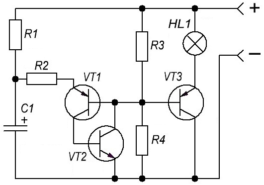
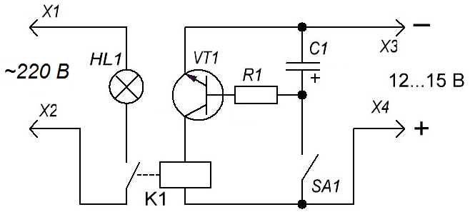
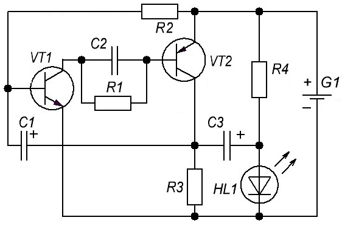

Простые схемы для начинающих
Фонарик-мигалка
Частоту миганий лампы можно регулировать подбором элементов сопротивлений резисторв R1, R2, конденсатора C1. Лампа может быть на напряжения 6-12 В. В зависимости от этого нужно выбирать напряжение питания схемы (от 6 до 12 В) и мощность коммутирующего транзистора VT3.

Таблица 1
| Обозначение | Тип | Номинал | Количество | Примечание |
|---|---|---|---|---|
| C1 | Электролитический конденсатор | 10мкФ 12В | 1 | |
| HL1 | Лампочка накаливания | 12 В | 1 | 6-12 В |
| R1 | Резистор | 47 кОм | 1 | |
| R2 | Резистор | 12 кОм | 1 | |
| R3 | Резистор | 910 Ом | 1 | |
| R4 | Резистор | 5,1 кОм | 1 | |
| VT1 | Транзистор биполярный | КТ361Б | 1 | КТ645, КТ502 |
| VT2 | Транзистор биполярный | КТ315Б | 1 | КТ312, КТ342, КТ503 |
| VT3 | Транзистор биполярный | КТ814Б | 1 | КТ816, КТ818 |
Автомат выключения освещения
От множества схем подобных автоматов эта отличается предельной простотой и надежностью и в подробном описании не нуждается. Она позволяет включать освещение или какой-нибудь электроприбор на заданное непродолжительное время, а затем автоматически его отключает.

Таблица 2
| Обозначение | Тип | Номинал | Количество | Примечание |
|---|---|---|---|---|
| C1 | Конденсатор электролитический | 4700 мкФ×16 В | 1 | |
| HL1 | Лампа накаливания | 100 Вт | 1 | |
| K1 | Реле | РЭС22 | 1 | |
| R1 | Резистор | 20 кОм | 1 | 15…47 кОм |
| SA1 | Кнопка | Без фиксации | 1 | |
| VТ1 | Транзистор биполярный | КТ801А | 1 |
Для включения нагрузки достаточно кратковременно нажать выключатель SA1 без фиксации. При этом конденсатор успевает зарядиться и открывает транзистор, который управляет включением реле. Время включения определяется емкостью конденсатора С1 и с указанным на схеме номиналом (4700 мкФ) составляет около 4 минут. Увеличение времени включенного состояния достигается подключением дополнительных конденсаторов параллельно С1.
Транзистор может быть любым n-p-n типа средней мощности или даже маломощным, типа КТ315. Это зависит от рабочего тока применяемого реле, которое также может быть любым другим на напряжение срабатывания 6-12 В и способным коммутировать нагрузку необходимой вам мощности. Можно использовать и транзисторы p-n-p типа, но нужно будет поменять полярность напряжения питания и включения конденсатора С1. Резистор R также влияет в небольших пределах на время срабатывания и может быть номиналом 15 … 47 кОм в зависимости от типа транзистора.
Мигалка на светодиоде с питанием 1,5 В
Cхема мигающего светодиода (рис. 3) работает как от 3,6 В питания, хотя работает от батарейки 1,5 В.

Таблица 3
| Обозначение | Тип | Номинал | Количество | Примечание |
|---|---|---|---|---|
| C1 | Электролитический конденсатор | 10 мкФ×16 В | 1 | |
| C2 | Конденсатор | 10 нФ | 1 | |
| C3 | Электролитический конденсатор | 100 мкФ×16 В | 1 | |
| HL1 | Светодиод | АЛ307 | 1 | |
| G1 | Элемент питания | 1,5 В | 1 | |
| R1, R4 | Резистор | 1 кОм | 1 | |
| R2 | Резистор | 100 кОм | 1 | |
| R3 | Резистор | 47 Ом | 1 | |
| VT1 | Транзистор биполярный | BC547 | 1 | КТ3102, КТ315, КТ312, КТ342, КТ503 |
| VT2 | Транзистор биполярный | BC557 | 1 | КТ3107, КТ361 |
Данная схема позволяет использовать разнообразные батарейки – ААА, АА или обычные «таблетки». В схеме желательно использовать белый светодиод. Он будет производить яркую вспышку. Вспышка «потребляет» минимальный ток, а это ведет к увеличению срока службы батареи. Тем самым, аккумулятор будет служить намного дольше.
Источники
cxem.net - Простые схемы для начинающих
radio-uchebnik.ru - Мигалка на светодиоде с питанием 1,5 Вольта